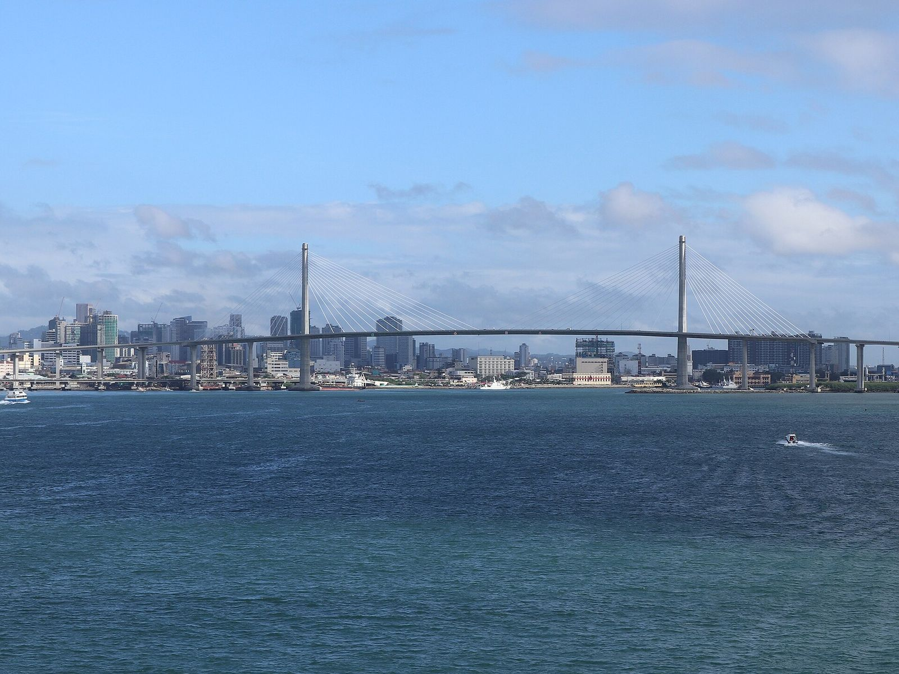

Season 2026 Cebu, Philippines
Eight towns. One island. Game on, Cebu.
From Danao in the north to Carcar in the south, the Sugbo League brings eight Cebu schools together for a season of basketball, football, volleyball, badminton, and chess.
Meet the teams